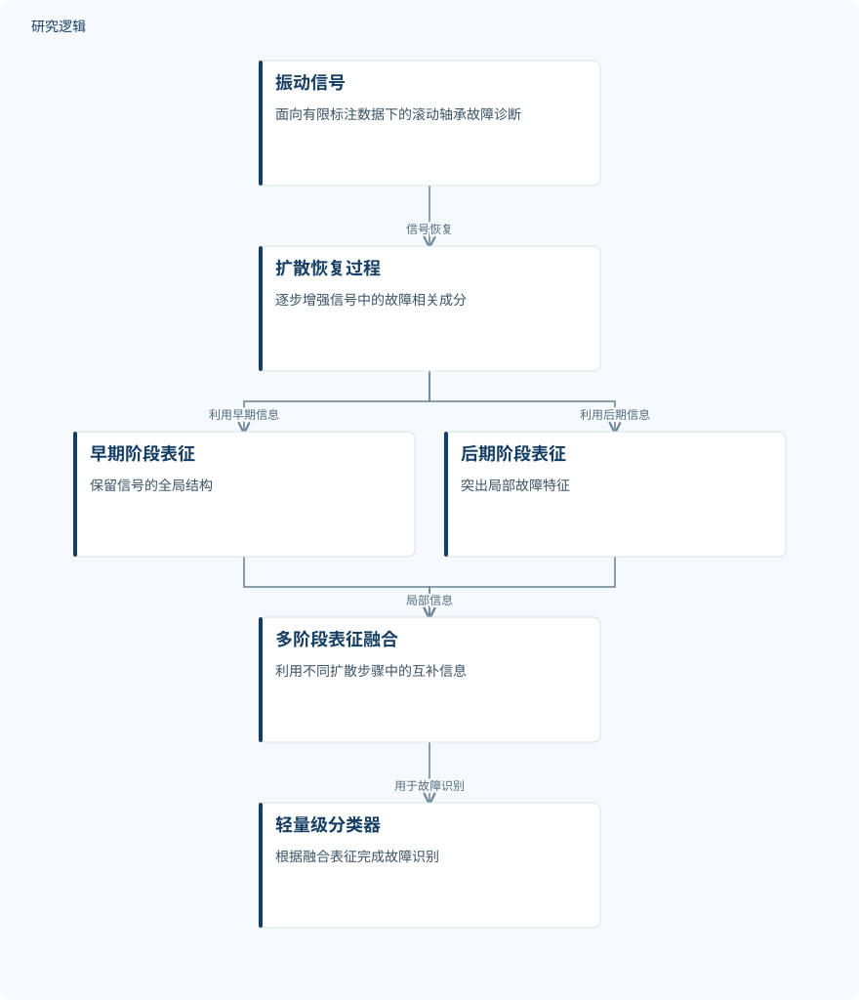

摘要解读
面向小样本滚动轴承故障诊断的多阶段扩散振动信号表征
Multi-stage diffusion-based vibration signal representation for few-shot rolling bearing fault diagnosis
解读更新 2026-11-10 18:03 · 依据公开摘要整理，未核验全文细节
标注数据有限时，如何从振动信号中提取足以区分轴承故障的特征？这项研究将扩散恢复与多阶段表征结合，阅读价值在于理解不同扩散阶段的信息为何被保留并融合，而不只是关注最终分类表现。
文章目录
少量标注下，故障特征如何保持可辨识
滚动轴承故障诊断面临一个现实难题：训练样本不足或含有噪声时，传统深度学习方法的性能容易下降。本文针对有限标注数据下的工业振动监测，关注如何改善信号表征，使故障相关信息在数据稀缺条件下仍能被有效提取。
从扩散恢复到跨阶段表征融合
研究提出基于多阶段扩散的振动信号表征方法。按照摘要描述，扩散恢复过程逐步增强振动信号中的故障相关成分，以提取更具区分性的特征。这里的扩散过程被用于信号恢复与表征，摘要并未将其描述为生成额外训练样本的数据增强方案。
多阶段策略进一步利用不同扩散步骤之间的互补信息：早期阶段保留信号的全局结构，后期阶段突出局部故障特征。随后融合这些表征，并交由轻量级分类器完成故障识别。方法的关键是联合利用不同阶段的信息，而非仅依赖单一阶段的输出。
依据摘要整理的多阶段扩散表征流程


仅概括摘要明确描述的信号恢复、阶段信息融合与故障识别关系，不代表论文原图或具体网络结构。
下载 SVG图示关系说明
实线表示相邻阶段的信息流，虚线表示跨阶段联系或反馈。
振动信号 → 扩散恢复过程：信号恢复；扩散恢复过程 → 早期阶段表征：利用早期信息；扩散恢复过程 → 后期阶段表征：利用后期信息；早期阶段表征 → 多阶段表征融合：全局信息；后期阶段表征 → 多阶段表征融合：局部信息；多阶段表征融合 → 轻量级分类器：用于故障识别
摘要报告：少样本条件下表现更优
摘要报告，作者在轴承基准数据集上开展实验，与若干先进方法相比，所提方法取得了更优的诊断表现，尤其是在少样本设置下。作者据此认为，扩散式信号表征有助于复杂工业环境中的稳健故障诊断；但摘要没有提供具体指标、提升幅度或逐项比较结果。
基准结果与工业适用范围仍需分开判断
仅凭本次摘要，无法判断所用数据集名称、标注样本数量、训练与测试划分、噪声设置，以及比较方法和比较条件。摘要也未交代不同阶段各自的贡献、融合方式、分类器结构及计算开销。这些属于当前资料未报告的信息，不能据此断言论文没有开展相关分析。
摘要中的复杂工业环境表述，也不足以确认现场部署、跨设备或跨工况验证的具体范围。因此，目前可以确认的是作者报告了基准数据集上的比较优势，尚不能据此评估其在特定工业现场的可靠性与适用边界。
阅读启发：关注互补信息，而非只看扩散模型
阅读启发：对于智能运维，更值得进一步阅读的问题是，早期全局结构与后期局部特征如何被界定和融合，以及比较结果能否支持这种互补性解释。另一个关注点是轻量级分类器之外的整条处理链开销；仅有分类器轻量，并不足以判断整体部署成本。
以上为本站阅读启发与建议，不是论文已验证的结论。